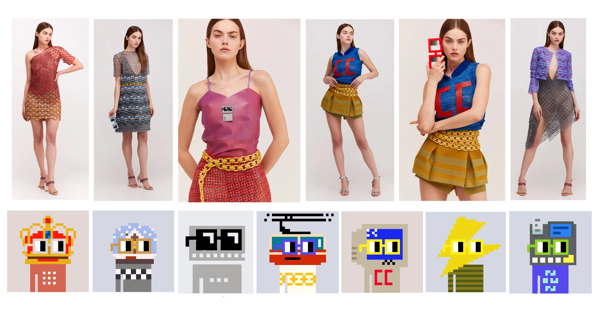

TLDR:
Danit Peleg collaborated with Nouns DAO to create a revolutionary 3D printed fashion line. This collection showcases customizable garments inspired by Nouns NFTs, highlighting the innovative potential of 3D printing in fashion.
Details:
Danit Peleg, a pioneer in 3D printed fashion, collaborated with Nouns DAO to create an innovative fashion line. The collection features various garments, including dresses, jackets, and accessories, all customizable in colors, patterns, and sizes.
Full details of these works can be found on: nouns.danitpeleg.com
The garments are made using advanced 3D printing techniques like Polyjet, FDM, and MJF, allowing for intricate designs and durable, flexible materials. All of the pieces, their colors, styles, and shapes are inspired by Nouns.
Danit Peleg has not only crafted a beautiful collection but is also advancing a narrative around sustainable fashion and disrupting an industry traditionally bound by high waste and inflexibility. Her work represents a promising fusion of technology, art, and eco-consciousness, pointing towards a future where fashion is both beautiful and beneficial to our planet.
Danit didnt stop with producing a collection of garmets. She's continued to showcase Nouns and her work at events like NFT Paris, NFT NYC, on billboards in Time Sqaure as well as in her presentations and speaking engagements.

Media Coverage:
The Nouns 3D printed fashion line received media coverage from both fashion and technology sectors, including being featured in
- Decrypt: Nouns 3D-Printed Fashion Collection at NFT Paris
- Decrypt: Nouns 3D-Printed Fashion Collection at NFT Paris
- 3D Printing: Nouns DAO Funds 3D Printed Fashion Collection
- Elle: The Jaw-Dropping Technology of 3D Printing Promises to Start a Fashion Revolution
- Culture Treasures: Danit Peleg's 3D Printed Fashion
- Yahoo Finance: Nouns 3D-Printed Fashion Collection Turns Heads at NFT Paris
- Coin Speaker: NFT Paris Attendees Wow at 3D-Printed Fashion Collection Inspired by Nouns
- NFT Plazas: Nouns 3D-Printed Fashion Collection Takes Center Stage at NFT Paris
- Binance: Echa un vistazo a esta moda impresa en 3D financiada por Nouns DAO
- NFT Now: An NFT Every Day: A Guide to the Nouns NFT Project, DAO, and Ecosystem
- Moon Creative CLub: 3D Fashion in NFTs, the Metaverse, and Based on Nouns
- Vogue Business: What would fashion look like if women were in charge?
- Crypto Craft: Nouns 3D-Printed Fashion Collection Turns Heads at NFT Paris
- Medium: Nouns DAO Funds 3D Printed Fashion Collection Shown at NFT Paris
Content:
Dates and Funding Details:
- Proposal 26 funded Jan 17th, 2022 (3.15 ETH)
- Proposal 41 funded April 7th, 2022 (17.9 ETH)
- Proposal 197 funded Jan 3th, 2023 ($125,246 USDC)
- Proposal 251 funded March 31st, 2023 ($51,720 USDC)
- Proposal 262 funded April 14th, 2023 ($16,000 USDC)
About Danit Peleg:
Danit Peleg, a pioneering fashion designer, has made significant strides in the industry with her innovative 3D printed fashion. She first gained international recognition in 2015 with a fully 3D printed graduate collection, crafted using desktop printers suitable for home use. This collection comprised five distinct looks and set a new precedent in the intersection of fashion and technology. Danit’s expertise led to her designing a 3D printed dress for the headline dancer at the Paralympics Games Opening Ceremony in 2016, further cementing her influence.
A recognized leader in tech-driven fashion, Danit has spoken at TED and has been featured in prestigious publications like Vogue and The New York Times. Her contributions to tech and fashion have not gone unnoticed, as evidenced by her inclusion in Forbes’ 2018 list of Europe’s Top 50 Women in Tech and BBC's 2019 list of 100 inspiring and influential women worldwide. Danit continues to advocate for the transformative potential of 3D printing in fashion, envisioning a future where design and production are democratized and more accessible. Learn more about Danit x Nouns.
Last Updated: June, 2024